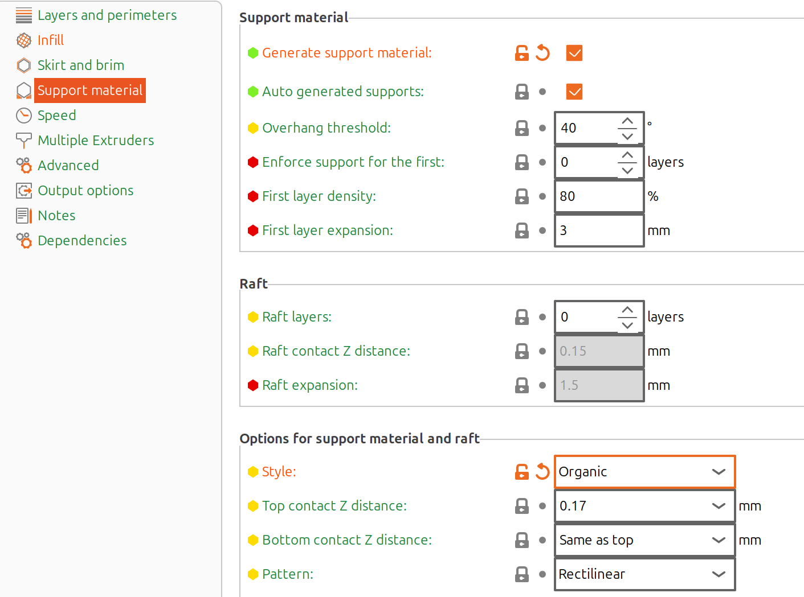

3D modeling and fabrication
Human-IST, ProtoFab, LearningLab, UniFR
ProtoFab assignment 7: 3D modeling and fabrication
Introduction
This practical work focuses on experimenting with 3D modeling and printing. You will have to model a prescribed shape while learning to set up a 3D design in Fusion 360, export it and prepare it for printing. You will be then able to define your own model and print it.
In this practical work, you will perform the following tasks:
- Task 1 – Install Fusion 360 and get access to the ProFab workspace
- Task 2 – Understand the basic modeling capabilities of Fusion 360
- Task 3 – Build a 3D shape with different modeling paths
- Task 4 – Model and export a support for the lux sensor
- Task 5 – 3D Print the support on the Prusa printer
Learning objectives:
At the end of the assignment, you should be able to
- Understand basic 3D modeling techniques
- Prepare a model for 3D printing
- Experiment with parametric modeling
- Have a small 3D model printed
- Use the printer autonomously
Task 1 – Setup the 3D modeling- 3D printing pipeline
You will open a model, export it to STL format, and finally slice it for 3D printing.
Download and install Fusion 360 on your computer
Accept the invitation you should have received per email. Log into autodesk.com
On your account drop-down, select “products and services”. You should then see Fusion 360. Click the button underneath to download the installer.
Run the installer
While the software gets installed, access your hub by clicking “Fusion team”. You should have access to the “profab” hub from your settings and then to the “profab” project.
- Once the software is installed, open the “sphere” model. Export it as “.f3d” and import it again in your own hub to be able to modify it as you wish.
- Export the model to STL by saving as .stl on your computer, using either “save as…”, or right-click on the component and “save as mesh…”.
Install the Prusa slicer
Start by downloading the Prusaslicer software and install it on your computer (again no need to be on linux/WSL).
Open the prusaslicer and select the printer model Prusa MK3S+ in the wizard.
Modify the main settings (on the right) as follows:
- Layer thickness 0.10 mm
- Filament Generic PLA
- Printer Prusa MK3S+
- Supports “Everywhere”
- Infill 15%
- “Expert mode” for the next steps

- Modify the infill settings by selecting the “Cubic” fill pattern
- Modify the support settings by selecting the “Snug” style and “Rectilinear grid” pattern

Slice the 3D model
Import your sphere STL file (File->Import->STL or ctrl-I or cube with a ‘+’ sign)
Select supports “Everywhere” on the main settings.
Slice the model by pressing the “slice now” button on the bottom right.
Observe the model and its supports. Use the vertical orange ‘+’ handle to unveil the infill pattern within the sphere. Note the histogram on the left.
Export the G-code by pressing the “Export G-code” button on the bottom right and save the file.
Open the G-code file, note the G1 X… Y… E… linear move instructions. XY stand for the plane and E for the “Extrude” axis.
You have now set up the 3D modeling - 3D printing pipeline.
Task 2 – Understand the basic modeling capabilities of Fusion 360
This task will involve following the videos provided on the autodesk website
Go to the Fusion self-learning website (Note: you have to be logged in to access the videos)
Select the ” Get started with modeling” collection and watch the following videos:
- Video “Compoments and bodies”: make sure you understand the need to create components to organize your modeling, and how to activate one compenent to work on it.
- Video “About sketching in Fusion”: make sure you understand how to edit a sketch and its constraints.
- Video “Fusion sketch constraints”: make sure you understand the need to constraint your sketches (disclaimer: you do not need to use so many constraints).
- Video “Extrude solid bodies”: make sure you understand the settings of the extrude function.
You may additionally watch the 2 remaining videos
[optional] Further work
- Have a look at the scripting capabilities of Fusion:
Task 3 – Build a 3D shape with different modeling paths
Model the following 3D shape
Model the 3D shape above using 3 different sketches.
- Draw the first triangle on a first sketch (on the horizontal plane) and then extrude it.
- Draw the second triangle on a second sketch (on one of the vertical planes) and then extrude it (use “join” operation).
- Draw the third triangle on a third sketch (on the other vertical planes) and then extrude it (use “join” operation).
- You should otbain the 3D shape above, not that the faces not visible in the image are flat (ie. two triangles have an extrusion length of 10 and one an extrusion length of 20).
Now, model the 3D shape again, this time using a single sketch and extrude:
- Create a new design
- Create a component, activate it
- Sketch a triangle, extrude it as in previous step (use an extrusion length of 10)
- Copy the component 4x (using “Move/Copy” to clone it). In the move/copy window, select “Create copy”.
- Now move/rotate the 4 components such that they represent the model. Hint: always activate the component before moving it.
- Modify the extent of the extrusion in 2. The model should adapt parametrically without collisions. Hint: the orientation of the 4 components is important …
Note the different structure of the model compared to step 1 (see below right)
Export the shape to STL and import it into the slicer. Rotate the model to minimizes the support time (shown in the histogram). You may need to use the “Place on face” tool.
Task 4 – Model and export a support for the lux sensor
In this task you will model a support for the VEML 7700 lux sensor that adpats to the robot support plate.
Create a new design,
Import the Turtlebot support plate from the “Assets” folder as a sketching guide (this is a STEP file). Center it on the XY plane and place it such that the XY plane is just above the plate.
- Create a new component and activate it. Draw the sketch below, making sure the circles are constrained concentrically to the holes on the plate. Placing the sketch as shown relative to the axis helps modeling.
- Extrude the different parts following the plan on the left, to obtain the model on the right (except the slice on the vertical part)

- Sketch a rectangle on the YZ plane
- Cut the hole for the sensor using an extrusion

- Add 0.5 mm fillet to smooth the edges for the printer (we will print it on the side)
- Finally, export your model to STL
[optional] Further work
Using the timeline at the bottom of the workspace, modify the different extrusion depths to see how the model adapts. Define user parameters to have the size of the holes automatically adapt to the thickness of the support
Add extrusions below the holes as guides to fit exactly the robot plate. Think about supports when printing.
Task 5 – 3D Print the support on the Prusa printer
Import the model from Task 4 into the Prusa slicer
Place it sideways on the plate to minimize supports and increase material stiffness.
Prepare the Prusa 4S+ printer by adding glue to the printing bed where your model is going to be printed or use the side of the printing bed
Print your model. You may want to print multiple models in parallel to speed up the process.
Contact information
- Dr. Simon Ruffieux, simon.ruffieux@unifr.ch
- Dr. Julien Nembrini, julien.nembrini@unifr.ch